Dermatite de Contato
66 imagens clínicas · toque para ampliar


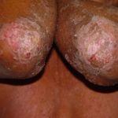


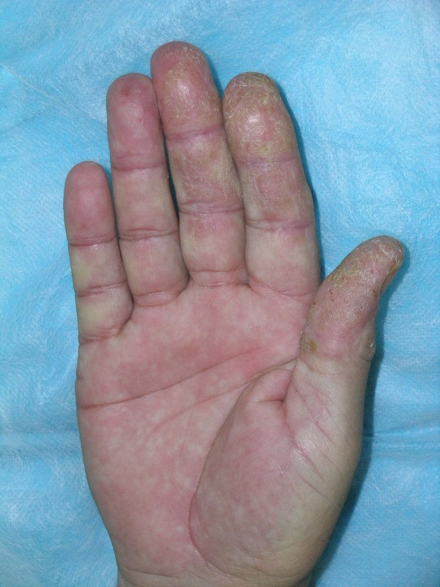

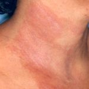

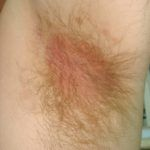


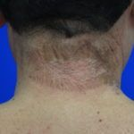


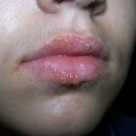


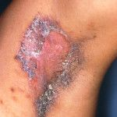


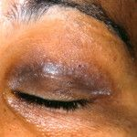


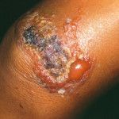


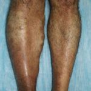


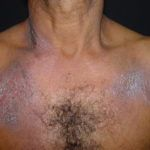

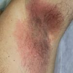


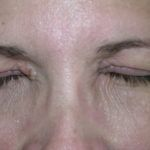

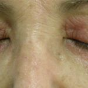

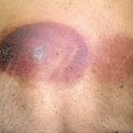


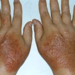


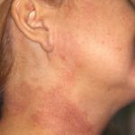

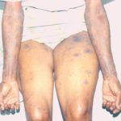


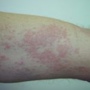

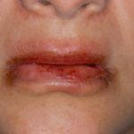


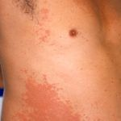

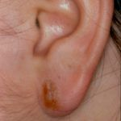

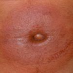

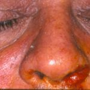


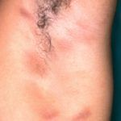

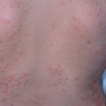

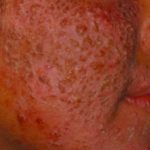

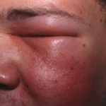


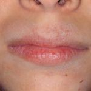


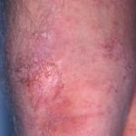


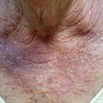

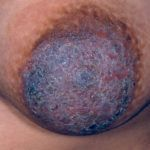

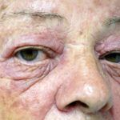
Texto da doença
Epidemiologia, quadro clínico, diagnóstico e tratamento de Dermatite de Contato, e como a Skin Prime pode ajudar.
Imagens clínicas de caráter educativo. Não substituem a avaliação de um dermatologista.